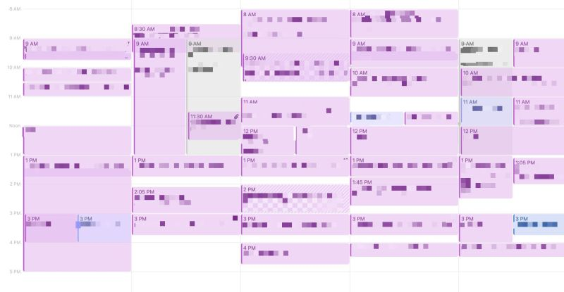

So you want to become a manager
Nobody in their right mind would ask me about how to become a singer or dancer.
However, I have done many career discussions as a manager and as a mentor. The three career goals I’m asked about the most are: manager, Ph.D. and data scientist. This is, of course, a biased sample.
There are many books about becoming a technical manager. #ad The Manager’s Path and #ad The Making of a Manager are popular examples. They are both excellent books covering different aspects of managing. Read both if you can. Erika Pullum also has an excellent post about the importance of experience with a longer list of book recommendations.
Becoming a people manager is a bigger career change than people realize, and should be done thoughtfully, as both the inputs and outputs of one’s work change substantially.
It’s a completely different game
One of the common ways of becoming a manager is excelling as an individual contributor (IC). ICs are mostly measured against the direct impact of their work. When they do well, they are sometimes asked to try out management.
Manager performance is usually measured by a combination of team output and HR-related metrics for the team such as job satisfaction, manager satisfaction, retention, etc. It’s hard to achieve optimal output if the HR metrics are suffering.
Unsurprisingly, the skills to perform well as an IC and the skills to perform well as a manager are different. Perversely, high-performance ICs that become manager have a handicap: they are usually a lot faster than their (new) direct reports. Instead of trying to develop and apply team management skills, these new managers sometimes take over work from their team members, preventing learning and growing, frustrating people and reducing the team’s effectiveness.
It’s not your calendar anymore
A large part of a manager’s time is talking to people. Of course, it is extremely important to have frequent 1:1s with direct reports. Management books spend significant time on this topic (my favorite tip: keep 1:1 notes in a shared document accessible to both participants). In addition to 1:1s, managers also spend time talking to a whole lot of other people: their own managers, clients (internal and/or external), partner teams, suppliers, HR, Finance, recruiting. They also represent their team in planning meetings and review meetings. All those conversations add up, as it can be seen in a sample manager calendar below, in which all purple meetings are conversations with other people.

With that much pressure on their calendars, it’s no surprise that managers give a lot of value to meeting efficiency. One of my favorite books on the topic is The Surprising Science of Meetings. Managers also need to be very efficient with their own time, which brings us to our next topic.
You are your team’s top recruiter
As hard as it is to coordinate a large team, having a shorthanded team is a lot worse. There are many reasons for a team to be shorthanded: people can leave for several reasons (competing offers, going back to school, etc.) or the team’s mission and scope may grow.
In any case, the sooner a manager can fill an opening with quality, the least they have to endure disruption to their time and to their team. Experienced managers develop large and deep networks, both internally and externally.
The external network allows managers to recruit external candidates more quickly and to keep a pulse in the job market. The internal network is important for several reasons: the first and more obvious is to find internal candidates, which tend to require less ramp-up.
A second reason is that a lot of a team’s work depends on other teams. One way to develop these internal networks is to help fellow managers hire: experienced interviewers are always in demand. A final, but important reason: managers occasionally find themselves on the other side of the interview table, and having a good networks helps finding good seats.
You are your team’s commitment tracker
During all those meetings, lots of commitments are generated. As a manager, your team will make commitments, and other teams will make commitments to your team. A lot of a manager’s time is prioritizing and keeping track of all these commitments, and a perhaps surprising portion of the time is spent renegotiating them.
Given the importance of tracking commitments, a large part of the management literature and tooling is dedicated to that topic. Different teams will have access to different tools and methodologies. Like the old adage “failing to plan is planning to fail”, having a process and tool is usually far better than having none.
A consistent process will outlive tools. I have been using the #ad Getting Things Done process for many years, but I have implemented it over several different tools during that period: Jira, Azure DevOps, Microsoft Tasks, OneNote, Quip, Wunderlist and many others.
Your tech growth will be slower
With all the time spent in meetings, recruiting and commitment tracking, there will be a lot less time left to learn new technologies. The longer someone spends in management, the more they have to move to the nitty-gritty details of existing and new technologies to the 30,000-foot strategic view of a technology’s application.
This is perhaps the most important trade-off of choosing a tech management career. Experience with managerial tasks, or “seat time” matters a lot for success as a manager, but once one moves to a management position, lot of time that could be spent learning technologies and techniques will be consumed by meetings, recruiting and commitment tracking.
Move into management too early and one’s experience may have to rely more on “seat time” instead of “tech depth”. Take too long to move and one may have enough “tech depth” to be frustrated at their team members lack of expertise, and may not have the “seat time” required to be an efficient manager for them.
It’s not all unicorns and rainbows, but there’s a lot of good
I found that I derive a lot more pleasure at telling somebody that they got the job that they applied for than from getting a new job myself. A similar thing happened when telling somebody that they got a promotion. And when somebody’s article got accepted to a conference. And in many other similar things.
I found that I enjoyed helping others succeed through early experiences with mentorship, before I became a manager. Being a manager is living vicariously and enjoying it. It’s not that I don’t enjoy being personally successful, but being a part of great teams and helping them succeed brought me more happiness than I think I could have found on my own.
When you feel the same, it’s worth it trying it out.
Posts on this blog are not sponsored. For an abundance of caution, if/when I link to a product/service that might compensate me for a referral, I use the tag #ad